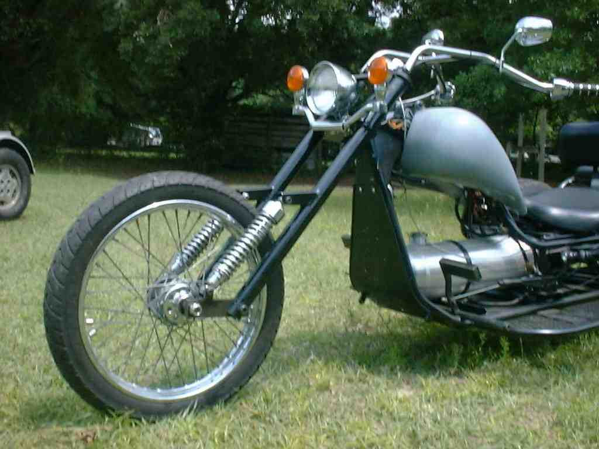
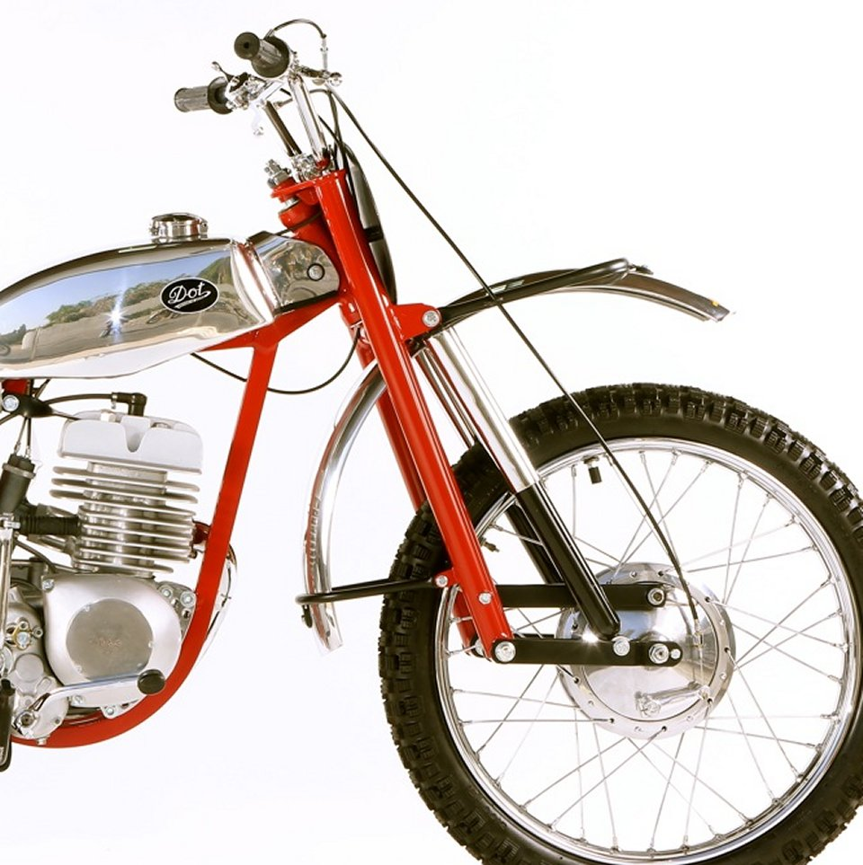

four bar linkages revision 3585
<youtube>Vh8r_Cpfb8Q</youtube>
Introduction
A four-bar linkage, also called a four-bar, is the simplest movable closed-chain linkage. It consists of four bodies, called bars or links, connected in a loop by four joints. Generally, the joints are configured so the links move in parallel planes, and the assembly is called a planar four-bar linkage. Spherical and spatial four-bar linkages also exist and are used in practice.
Leading link suspensions


A leading link fork suspends the wheel on a link (or links) with a pivot point aft of the wheel axle. Russian Ural motorcycles used leading link forks on sidecar equipped motorcycles, and aftermarket leading link forks are often installed today on motorcycles when they are outfitted with sidecars. They are also very popular with trikes, improving the handling while steering or braking. The most common example of a leading link fork is that found on the Honda Super Cub.
Virtual four bar linkage
<youtube>C8Za5GKdSUA</youtube>
Tools
 Wrenches|Wrenches" loading="lazy">
Wrenches|Wrenches" loading="lazy">